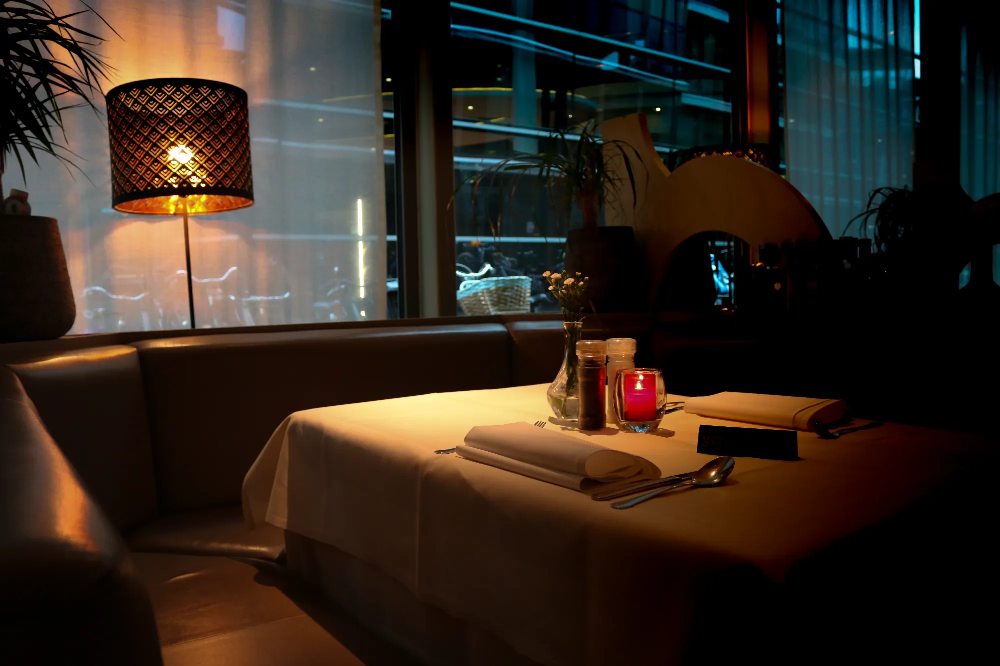
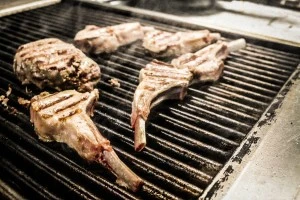
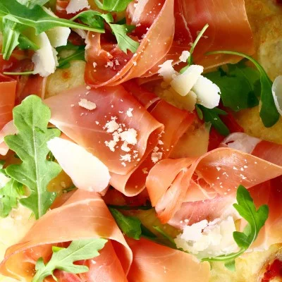
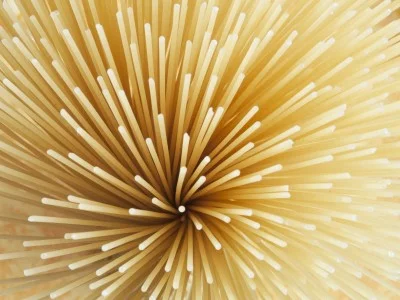
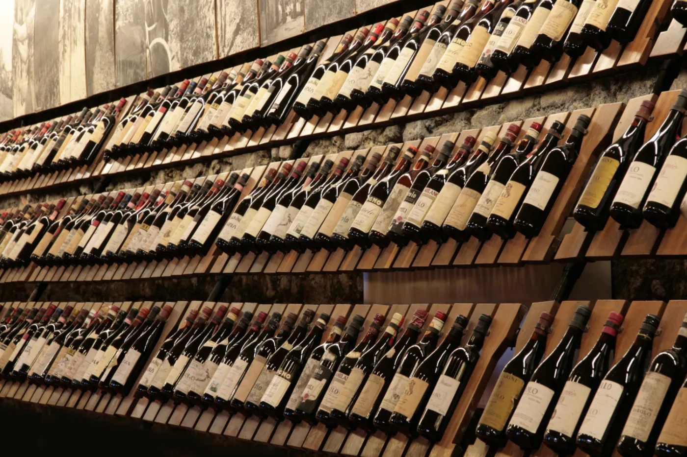

Ristorante italiano · Dommelstraat 29, Eindhoven
da Verdi
Al meer dan 45 jaar een begrip in Eindhoven. Dagverse, huisgemaakte Italiaanse gerechten, zeven dagen per week.
Keuken open: ma t/m do vanaf 17.00, vr t/m zo vanaf 16.00
- 7 dagenper week open
- Afhalenis mogelijk
- Serre & terrasoverdekt en verwarmd
- VVV-cadeaukaartwordt geaccepteerd
Over ons
Gewoon goed Italiaans eten, al ruim 45 jaar
Da Verdi is al meer dan 45 jaar een begrip in Eindhoven. Voor de heerlijkste pizza- en pastagerechten, maar ook voor overheerlijke vlees- en visgerechten uit de Italiaanse keuken.
Onze gerechten zijn dagvers en huisgemaakt en worden bereid met pure en authentieke producten. Gecombineerd met een gezellige sfeer, Italiaanse muziek en een heerlijke Italiaanse wijn komt uw diner geheel tot zijn recht.
U kunt zeven dagen per week bij ons genieten.




I vini
Wijnkaart
Italiaanse wijnen per glas, karaf of fles. Ook alcoholvrij.
Rode wijnen
- Montepulciano d’Abruzzo DOC huiswijn6,95 glas20,50 karaf 500 ml39,50 karaf 1 liter
- Lambrusco Rosso Tappo Fungo IGT6,50 glas27,50 fles
- Negroamaro, Vecchia Torre34,50 fles
- Valpolicella Ripasso Superiore8,50 glas39,95 fles
- Primitivo Capoforte8,25 glas39,25 fles
- Barbera d’Asti, Ferraris (Piemonte)41,50 fles
- Chianti Classico Riserva ‘Il Grigio’51,50 fles
- Susumaniello, Salento57,50 fles
- Barolo Serralunga73,50 fles
- Amarone della Valpolicella Riserva85,50 fles
- Cabernet Sauvignon 0% alcoholvrij6,95 fles 200 ml
Witte wijnen
- Pinot Grigio Garganega DOC huiswijn6,95 glas20,50 karaf 500 ml39,50 karaf 1 liter
- Lambrusco Bianco Tappo Fungo IGP6,50 glas27,50 fles
- Chardonnay Veneto ‘I Gadi’7,50 glas35,50 fles
- Sauvignon Blanc, Zagara8,25 glas37,50 fles
- Verdicchio dei Castelli di Jesi Classico38,50 fles
- Salento Chardonnay IGT ‘Numen’, Paolo Leo39,95 fles
- Lugana, Cecilia Beretta44,50 fles
- Luisa Pinot Grigio46,50 fles
- Chardonnay 0% alcoholvrij6,95 fles 200 ml
Rosé
- Rosato ‘Corte Vinaia’ huiswijn6,75 glas31,50 fles
- Rosato Negroamaro36,50 fles
Mousserende wijnen
- Prosecco Frizzante ‘Defra’9,75 fles 200 ml
- Prosecco Extra Dry Millesimato34,50 fles
- Spumante Rosé Extra Dry Perlit ‘Maximilian’36,50 fles
Dessertwijn
- Vin Santo, Badiolo7,25 glas
Prenotare
Reserveren
U kunt van tevoren of aan de deur reserveren. Na bevestiging is de reservering definitief.
- Overdekte en verwarmde serre en terras
- Gesplitst betalen is niet wenselijk
- Wij accepteren VVV-cadeaukaarten
Dove siamo
Contact & openingstijden
Da VerdiDommelstraat 29
5611 CJ Eindhoven
040 244 8722
info@daverdi.nl
| Maandag t/m donderdag | 17.00 – 23.00 |
|---|---|
| Vrijdag t/m zondag | 16.00 – 23.30 |
| Maandag t/m donderdag | 17.00 – 22.30 |
|---|---|
| Vrijdag t/m zondag | 16.00 – 22.30 |